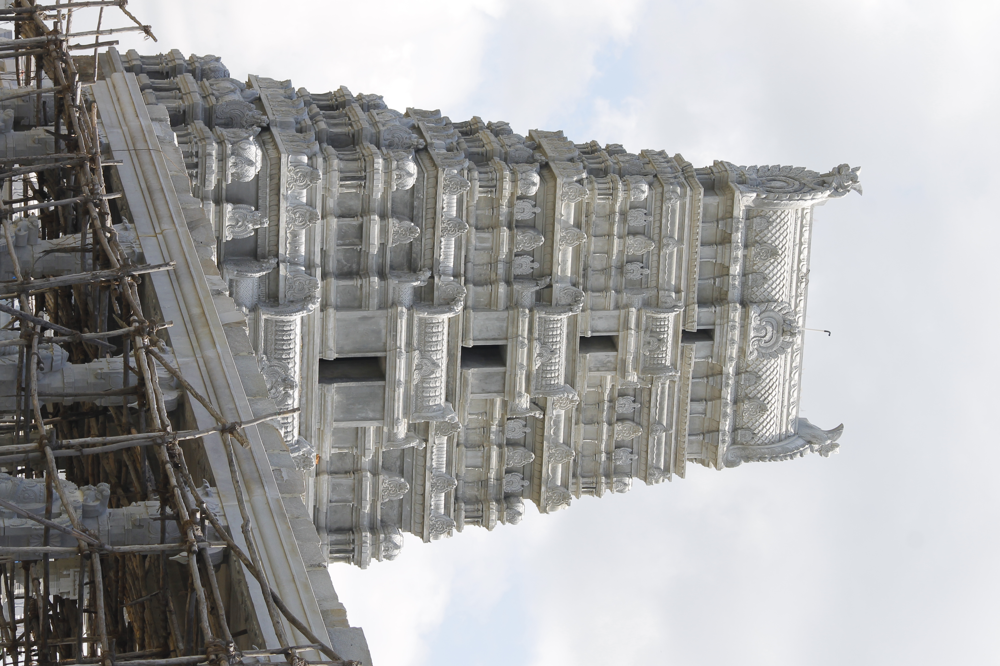
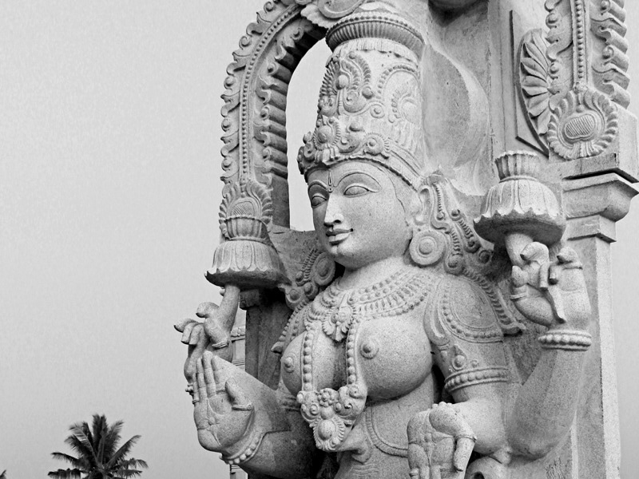
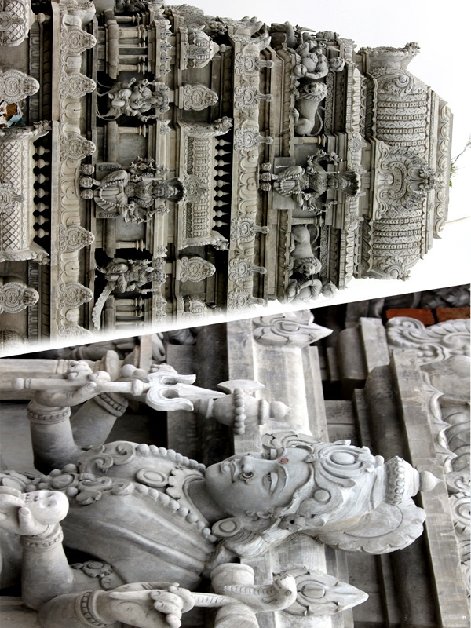
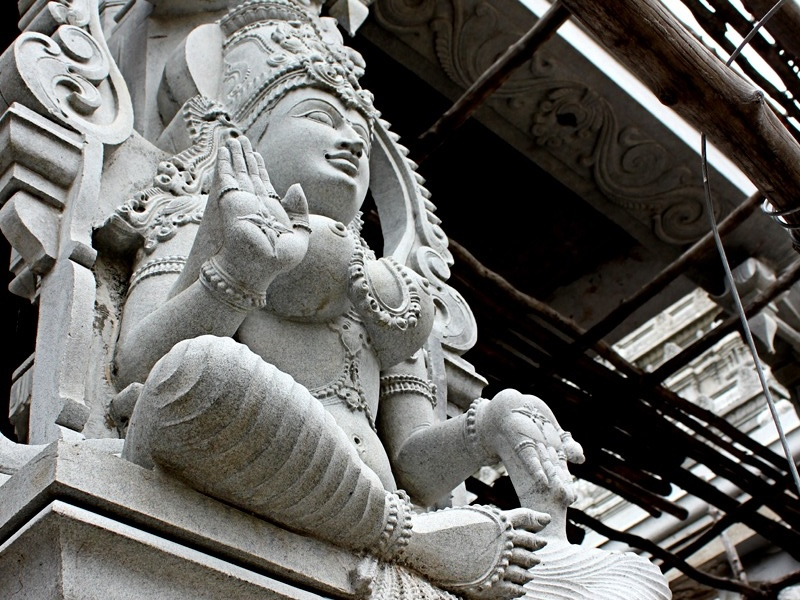

Where Devotion Meets Divine Architecture

India is home to many temples, some modest, while others grandiose in their intent and structure. The upcoming temple of Goddess Sri Samayapuram MahaMariamman is one where the Goddess chose her own residence among her devotees.
This Divine Calling from the Almighty Herself came through her chosen devotee, our revered Swamiji, a pure soul pre-destined to walk the path of spirituality and propagation of noble causes as guided by the Heavenly Forces.
Architectural Marvel Following Agama Shastra Principles
Raja Gopuram
9 Stories — Tallest in the vicinity
Temple Complex
Spread across 3½ acres
Monumental Entrances
Ornately designed in stone
Carved Stone Pillars
With Goddess engravings
Temple Sections
Inner, Middle & Outer
Total Height
Dravidian Style Architecture
The Goddess Sri Samayapuram MahaMariamman is an incarnation of Goddess Parvati, the Divine Goddess who exudes power and is worshipped as the creator of life's forces. She blesses her devotees with Ashtabhuja (eight arms) that enable them to fulfil their duties and attain their desires.
Like a Mother, she knows exactly what her devotees need and is always there to fulfill their needs at the appropriate time. That is why she is called "Samayapuram Mariamman".
Read More About the Goddess
Chosen by the Devi Herself
123 km from Bangalore, near Baburayankoppal on the Bangalore-Mysore Highway, in Mandya district, Srirangapatna, Karnataka.
Located at the confluence of river Cauvery and LokPavani — one of the seven sacred rivers in Indian heritage.
Nimisha Ambika temple across the Cauvery and Kashi Vishwanath temple in the South-West lend an omnipotent aura.
The location has the right balance of the 5 elements — Air, Water, Fire, Earth & Sky — making it a Dharma Kshetram.
Glimpses of the Sacred Construction






By joining hands with us in our mission to build this magnificent temple, you will be part of a noble deed. This temple will stand for many hundreds of years and our future generations will be blessed.
Beneficiary: Sri Samayapuram Mariamman Temple Trust
Bank: State Bank of India
Account No: 32298851964
IFSC Code: SBIN0040807
For donations and inquiries, please contact us:
+91 97911 67265
samayapuramtemple.spatna@gmail.com
General Information